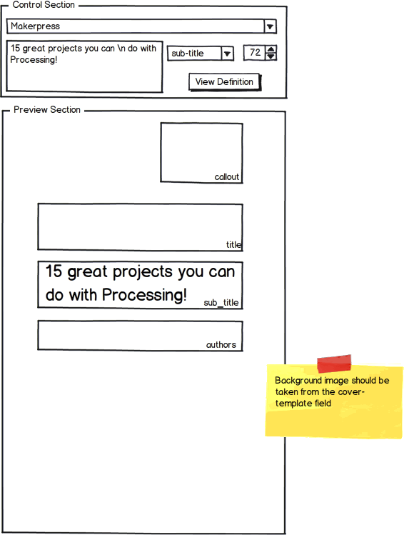
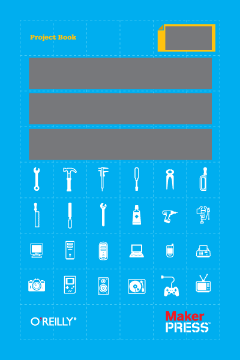

The cover generator is a tool for putting various elements (title, sub-title, etc) on a cover. Here are
some specs:
- It should use javascript, processing.js or something similar
- It accepts a JSON object that provides default values for the elements. Here's the sample format
- There are two basic parts to the interface. The preview section and the control section
- The Preview Section
- Displays the various elements at their approiate sizes. So, the title element will appear at the specified (x,y) position at the specified font size.
- The background image should be taken from the cover-template field in the JSON field.
- The cover image will be 600px along its longest side, with a maximum dimensions of 600px x 600px.
- The Control section
- The user should be able to select from among the different imprints in the JSON structure
- The control section should be built dynamically from the JSON
- Allows user to set new values for the various elements. For example, they should be able to set the values in the "Title" field.
- The user should be able to enter a "\n" in the "text" field to create a linebreak in the title which will be rendered in the "Preview" panel.
- Changes made in the control sections should update the in-memory JSON data structure
- The user should be able to press the "View Definition" button to see a new version of the JSON with the custom values defined for the selected imprint.
- They should be able to cut-and-paste th new defintion values into another file on their OS.
The system should look something like these basic wireframes:

Here is a sample page template:
